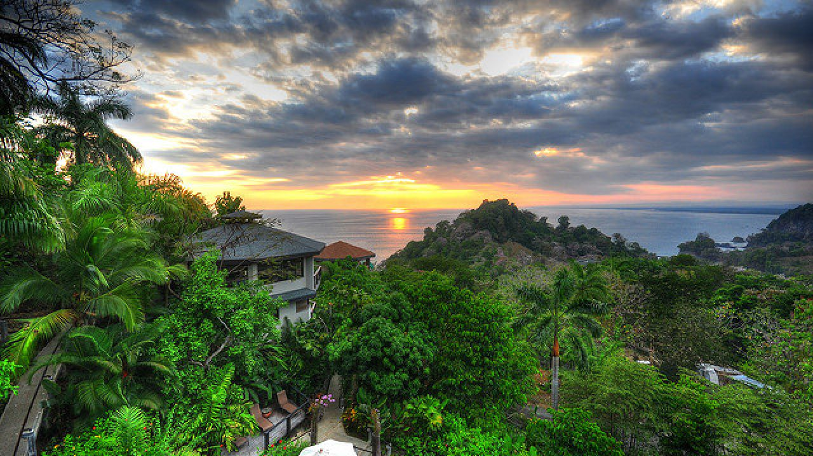
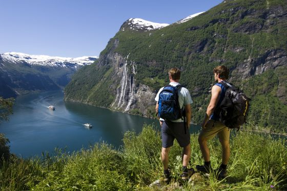

Destinos Ecológicos



Costa Rica
Pionero en ecoturismo, ofrece selvas tropicales, volcanes y playas vírgenes. El 25% de su territorio son áreas protegidas.
Destacan el Parque Nacional Corcovado y los canopy tours en Monteverde, que permiten explorar el dosel del bosque nuboso.

Noruega
Líder en turismo sostenible con sus fiordos certificados. Ofrece avistamiento de auroras boreales en cabañas ecológicas.
Los cruceros híbridos eléctricos permiten explorar los fiordos con mínimo impacto ambiental, respetando los ecosistemas marinos.

Nueva Zelanda
Pionera en conservación con el proyecto "Predator Free 2050" para eliminar especies invasoras y proteger la fauna nativa.
El Great Walk network ofrece rutas de trekking sostenibles a través de paisajes que parecen de otro planeta.
Un destino ecológico debe minimizar el impacto ambiental, apoyar la conservación, beneficiar a las comunidades locales y ofrecer educación ambiental. Certificaciones como la CST en Costa Rica o Green Destinations validan estos criterios.